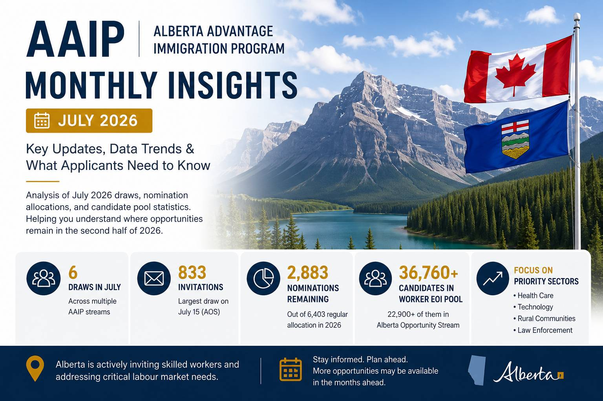

2026年7月AAIP月度观察：阿省省提名进入下半场，今年还有多少机会？
Read in English
截至2026年7月15日，Alberta Advantage Immigration Program（AAIP） 已经公布了本月多轮抽选结果。
相比单独关注某一次53分、55分，或者833份邀请， 本月的数据更值得从整体角度进行观察。 因为进入7月，也意味着2026年的AAIP已经正式进入下半场。
对于准备申请阿省省提名的人来说， 现在更值得关注的问题已经不再只是： “这一轮的最低分数是多少？”
更重要的问题是：2026年还剩多少提名机会？ AAIP正在把有限的名额优先留给哪些申请人？
一、7月份抽选继续保持活跃
截至2026年7月15日，AAIP已经进行了6轮邀请。 本月的邀请涉及多个移民类别，包括：
- Alberta Opportunity Stream；
- Dedicated Health Care Pathways；
- Accelerated Tech Pathway；
- Rural Renewal Stream；
- Law Enforcement Pathway。
其中，邀请规模最大的仍然是Alberta Opportunity Stream（AOS）。 7月15日，AOS一次发出833份邀请，最低Worker Expression of Interest （EOI）分数为53分。
不过，如果回顾2026年以来的邀请数据， 这其实属于AAIP今年较为正常的邀请节奏。
今年AOS最低分数大致在50多分至60多分之间波动， 而单轮邀请人数也曾介于约447人至993人之间。
因此，7月15日的邀请并没有显示出明显降低门槛， 或者突然扩大邀请规模的迹象， 而更像是延续了近几个月以来的邀请模式。
二、真正值得关注的是年度提名配额
截至7月中旬，AAIP在2026年获得6,403个常规省提名名额。
| 2026年常规提名配额 | 已经使用 | 剩余名额 |
|---|---|---|
| 6,403 | 约3,520 | 约2,883 |
换句话说，2026年的常规省提名配额已经使用超过一半。
虽然下半年仍然保留了相当数量的提名空间， 但是之后的每一次邀请和提名， 都会进一步减少剩余名额。
对于尚未进入Worker EOI候选池， 或者仍在准备语言、雇主及申请材料的申请人来说， 下半年可能比上半年更需要密切关注项目变化。
三、不同类别的机会并不相同
从AAIP公布的数据来看，不同Stream目前的配额使用情况并不相同。 因此，即使都属于阿省省提名， 不同类别的申请人面对的竞争环境也可能有明显差别。
Tourism and Hospitality Stream
Tourism and Hospitality Stream已经使用了超过八成的年度提名配额。 这意味着该类别在2026年剩余的提名空间已经相对有限。
Dedicated Health Care Pathways
Dedicated Health Care Pathways目前仅使用了大约三分之一的年度配额。 从剩余容量来看，医疗相关申请人在2026年下半年仍然可能持续获得邀请。
Alberta Opportunity Stream
Alberta Opportunity Stream虽然仍然是邀请人数最多的类别， 但同时也是候选池规模最大的类别。
因此，邀请人数较多并不代表竞争较低。 AOS申请人仍然面对非常庞大的候选人群体。
同样属于AAIP，并不代表不同Stream拥有相同的申请机会。 申请人需要同时观察自己类别的候选池规模、配额使用情况和邀请方向。
四、22,000多人正在等待AOS邀请
截至2026年7月15日，AAIP Worker EOI候选池共有超过36,700名候选人。
其中，约22,900人选择了Alberta Opportunity Stream。 也就是说，整个Worker EOI候选池中， 超过六成的候选人集中在AOS。
| Worker EOI候选池 | AOS候选人 | 占比情况 |
|---|---|---|
| 超过36,700人 | 约22,900人 | 超过六成 |
这说明，即使AOS每轮可以发出数百份邀请， 面对庞大的候选池，竞争仍然十分激烈。
因此，看到某一轮最低EOI分数为53分， 并不能简单理解为： “只要达到53分，就一定有机会获得邀请。”
AAIP也明确说明，Worker EOI分数只是筛选因素之一。 每轮邀请还可能综合考虑：
- 阿省劳动力市场需求；
- 申请人的职业和行业；
- 省政府当前的政策优先事项；
- 申请库存；
- 不同类别的剩余提名配额。
五、2026年的AAIP越来越强调产业需求
如果观察7月份的全部抽选，可以发现， 除了Alberta Opportunity Stream之外， AAIP仍然持续向多个重点领域发出邀请。
这些重点方向包括：
- 医疗和健康护理；
- 科技行业；
- Rural社区；
- 执法人员。
这反映出AAIP目前仍然围绕阿省劳动力市场需求， 分配有限的省提名名额。
对于申请人而言，未来判断AAIP申请机会， 已经不能只看EOI分数。
更值得分析的是：
- 自己的职业是否属于阿省当前重点支持的行业；
- 是否拥有稳定的阿省工作；
- 是否符合相关Stream的完整申请条件；
- 自己的类别在2026年还剩多少提名容量；
- 自己的情况是否符合省政府当前的优先方向。
我们的观察
进入2026年下半年，AAIP并没有释放明显放宽门槛的信号。
相反，官方公布的数据表明， AAIP仍然保持着相对稳定的邀请节奏， 并根据不同产业和不同Stream， 分配有限的年度提名配额。
因此，对于准备申请AAIP的人来说， 与其反复关注每一轮最低EOI分数， 不如持续观察三个更重要的数据。
- 2026年还剩多少省提名名额；
- 自己的Stream目前还剩多少机会；
- 阿省当前真正优先支持哪些行业和职业。
这些信息，往往比某一轮的最低分数， 更能帮助申请人判断自己的真实竞争力。
53分并不等于普遍门槛，833份邀请也不等于申请机会明显增加。 申请人需要把分数、职业、行业、雇主、类别配额和省政府优先方向结合起来分析。
申请提示
本文旨在分享加拿大移民政策及申请实践中的观察与分析， 仅供一般信息参考，并不能替代针对个案的专业意见。
加拿大移民申请通常涉及申请人的教育背景、工作经历、 家庭情况、身份状态、雇主条件及申请时间等多项因素。 即使面对同一项政策，不同申请人的申请策略和适用项目也可能不同。
如果您希望了解自己的情况是否适合某项移民或签证项目， 或希望在递交申请前获得更有针对性的建议， 欢迎与我们联系进行个人申请评估。
AAIP Monthly Insights – July 2026: Alberta Enters the Second Half of the Year
As of July 15, 2026, the Alberta Advantage Immigration Program had completed six invitation rounds during the month across several immigration streams.
Rather than focusing on a single result—such as the Alberta Opportunity Stream issuing 833 invitations with a minimum Worker Expression of Interest score of 53— July’s data is more meaningful when viewed as a whole.
With the second half of 2026 now underway, the more important question for prospective applicants is no longer: “What was the minimum score in the latest draw?”
Applicants should instead ask: How many nomination opportunities remain this year, and where is Alberta directing its limited nomination allocation?
Draw Activity Remains Strong
AAIP conducted six invitation rounds between July 3 and July 15, covering several immigration pathways:
- Alberta Opportunity Stream;
- Dedicated Health Care Pathways;
- Accelerated Tech Pathway;
- Rural Renewal Stream; and
- Law Enforcement Pathway.
The Alberta Opportunity Stream remained the largest stream, issuing 833 invitations on July 15 with a minimum Worker EOI score of 53.
However, when viewed alongside earlier draws in 2026, this does not represent a significant policy shift.
Throughout the year, AOS invitation thresholds have generally fluctuated between the low 50s and the mid 60s, while invitation volumes have ranged from approximately 447 to 993 invitations per draw.
The July 15 draw therefore appears to continue Alberta’s recent invitation pattern, rather than signalling a major relaxation of selection criteria.
The Annual Nomination Allocation Matters More Than a Single Draw
AAIP received 6,403 regular provincial nomination spaces for 2026.
| 2026 Regular Allocation | Nominations Issued | Spaces Remaining |
|---|---|---|
| 6,403 | Approximately 3,520 | Approximately 2,883 |
More than half of Alberta’s regular annual nomination allocation had therefore been used by mid-July.
Although a substantial number of nominations remain available, every future invitation and nomination will gradually reduce the available capacity.
For applicants who have not yet entered the Worker EOI pool, or who are still preparing language results, employer documents or other materials, the second half of the year may become increasingly competitive.
Opportunities Differ Significantly Between Streams
One of the most important observations from the official data is that not all AAIP streams are in the same position.
The Tourism and Hospitality Stream has already used more than 80% of its annual allocation, leaving relatively limited capacity for the remainder of the year.
Dedicated Health Care Pathways, by contrast, have used only about one-third of their allocation, suggesting continued opportunities for healthcare professionals.
Alberta Opportunity Stream remains the largest pathway by invitation volume, but it also has the largest candidate pool.
Applicants in different streams therefore face very different competitive environments, even though they are applying under the same provincial immigration program.
More Than 22,000 Candidates Are Waiting in the AOS Pool
As of July 15, the AAIP Worker EOI system contained more than 36,700 candidates.
Approximately 22,900 of those candidates selected the Alberta Opportunity Stream.
| Worker EOI Pool | AOS Candidates | Approximate Share |
|---|---|---|
| More than 36,700 | Approximately 22,900 | More than 60% |
Although Alberta regularly issues several hundred invitations through AOS, competition remains substantial because of the size of the candidate pool.
A minimum EOI score of 53 should therefore not be interpreted as a guaranteed invitation threshold.
Worker EOI scores are only one factor considered during invitation rounds. Labour market needs, occupations, industries, provincial priorities, application inventory and nomination allocation may all influence selection decisions.
Alberta Continues to Prioritize Key Economic Sectors
July’s invitation rounds also demonstrate that Alberta continues to direct invitations toward strategic sectors, including:
- health care;
- technology;
- rural communities; and
- law enforcement.
Alberta increasingly appears to be allocating its nomination spaces according to labour market priorities and economic needs, rather than relying solely on Worker EOI scores.
Prospective applicants should therefore consider:
- whether their occupation aligns with Alberta’s priority sectors;
- whether they have stable employment in Alberta;
- whether they meet the eligibility requirements of their intended stream;
- how much nomination capacity remains within that stream; and
- whether their circumstances align with Alberta’s current priorities.
Our Observations
The July data does not suggest that AAIP has significantly lowered its selection standards.
Instead, it demonstrates that Alberta continues to maintain a relatively consistent invitation rhythm, while strategically distributing its limited nomination allocation across different immigration streams.
For applicants considering AAIP in the second half of 2026, three indicators deserve closer attention than the minimum EOI score from any single draw:
- how many provincial nomination spaces remain for the year;
- how much capacity remains within the intended immigration stream; and
- whether the applicant’s occupation and employment background align with Alberta’s current economic priorities.
These factors are likely to provide a more accurate indication of an applicant’s immigration prospects than the minimum score reported in any individual draw.
Application Insights
Canadian immigration policies continue to evolve, and every applicant has a unique background, occupation, employment history, immigration status and family situation.
The same policy can create very different opportunities for different applicants.
Rather than relying solely on the minimum score from a recent draw or individual experiences shared online, it is often more helpful to assess your own circumstances before deciding on an immigration strategy.
If you would like to determine whether you may qualify for a particular immigration or temporary resident program, we welcome you to contact us for a personalized assessment.